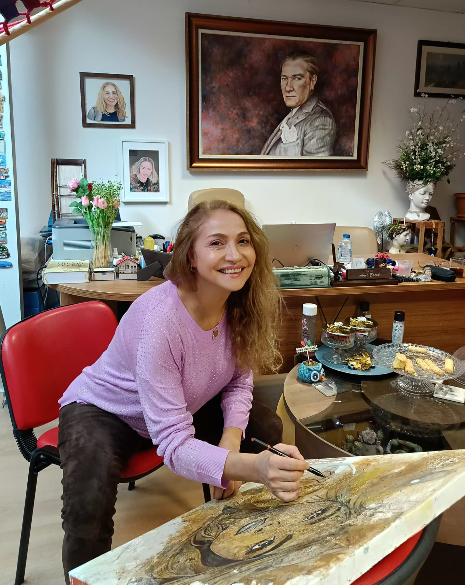

Prof. Dr. Anıl Ertok
Sanat · Akademi · Tasarım · Araştırma
Sanat · Akademi · Tasarım · Araştırma
1972 doğumlu Prof. Dr. Anıl Ertok Marmara Üniversitesi Resim İş Eğitimi Bölümünü 1995 yılında tamamlamış ve ardından başladığı aynı Üniversitenin Sosyal Bilimler Enstitüsünde Yüksek Lisans eğitimini 1998 yılında tamamlamıştır. 1996 yılında Çanakkale Onsekiz Mart Üniversitesinde ilk önce Okutman sonrasında Araştırma Görevlisi olarak çalışma hayatına Akademisyen olarak başlamıştır.
Aynı yıl Gazi Üniversitesi Eğitim bilimleri Enstitüsünde Doktora programına başlayan Ertok 2005 yılında mezun olarak Çanakkale Onsekiz Mart Üniversitesine geri dönerek 3 yıl çalıştıktan sonra 2009 yılında Karabük Üniversitesi Safranbolu Fethi Toker Güzel Sanatlar ve Tasarım Fakültesi Resim Bölümüne geçiş yapmıştır. 2016 yılında Doçent Dr, 2021 yılında Prof. Dr. ünvanı almıştır. Halen aynı Üniversitede Prof. Dr olarak görev yapmaktadır.
Çalıştığı 29 yıllık meslek hayatının 20 yıl kadarı Bölüm Başkanlığı, Dekan Yardımcılığı, Meslek Yüksek Okulu Müdürlüğü gibi çeşitli yöneticiliklerde bulunmuş, 2016–2023 yılları arası Rektör Danışmanlığı, 2021–2024 arası Safranbolu Güzel Sanatlar ve Tasarım Fakültesi Dekanlığı görevlerini yapmıştır.
Anıl Ertok’un açmış olduğu 6 kişisel sergisi ve ulusal–uluslararası pek çok karma sergisi bulunmaktadır. Yayınlamış olduğu Temel Tasarım adlı bir kitabı ve birçok kitapta bölüm yazarlıkları ile makaleleri bulunmaktadır.

Anıl Ertok’un en son sergi çalışması


E-posta: anilertok@gmail.com
Telefon: +90 532 258 00 25